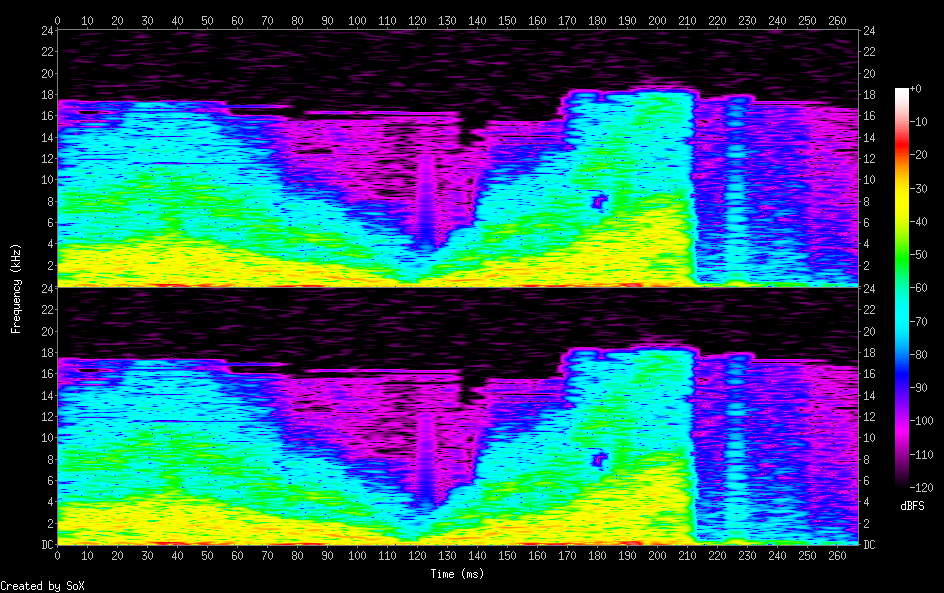

Vinyl Scratch

/cc0/sonic_pi/samples/vinyl_scratch
sample :vinyl_scratch
{
"samples_read": 26882.0,
"length": 0.280021,
"scaled_by": 2147483647.0,
"maximum_amplitude": 0.423584,
"minimum_amplitude": -0.458588,
"midline_amplitude": -0.017502,
"mean_norm": 0.050231,
"mean_amplitude": 0.000428,
"rms_amplitude": 0.075844,
"maximum_delta": 0.153595,
"minimum_delta": 0.0,
"mean_delta": 0.004583,
"rms_delta": 0.010832,
"rough_frequency": 1091.0,
"volume_adjustment": 2.181
}